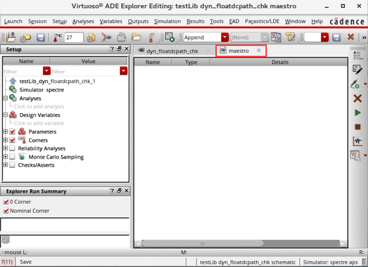
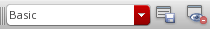

1
Getting Started with ADE Explorer
Introducing Virtuoso ADE Explorer
Virtuoso® ADE Explorer provides a single-testbench platform that you can use to define the simulation settings and run simulations based on the specified settings. You need to specify the following essential settings in the Virtuoso® ADE Explorer Setup before running a simulation—design variables, temperature, simulator, analysis, model files, and other setup files. You can also define the various outputs that are to be saved or plotted during a simulation run. By default, Spectre simulator is used to run simulations in ADE Explorer; however, you can choose other simulators as well, such as HSPICE, AMS, UltraSim.
When you run a simulation, the results are saved in a predefined formats and can be used by other tools such as the Virtuoso Visualization and Analysis XL for further analysis. If there are signals in the simulation results, they are by default plotted in the Virtuoso Visualization and Analysis XL Graph window.
Virtuoso® ADE Explorer is a part of the Virtuoso Design Framework II (DFII) environment, which is the foundation on which a wide range of Cadence tools are built. Using this architecture, you can go from one tool to another without tedious data conversion. The consistent user interface makes it convenient to apply your knowledge of one Cadence tool to many other Cadence tools. The design framework II environment is an open system. You can integrate third party tools and enter your own design data with industry-standard EDIF and Virtuoso® GDSII Stream formats. Circuit simulators can be integrated using OSS.
The Virtuoso® ADE Explorer provides the following key features:
- Consistent user-interface
- Display and analyze simulation outputs
- Real-time tuning of design
- View annotations
- Create, view, and run corners
- Add, view, and run specifications for outputs
- Set up and run sweeps
- Set up and run Monte Carlo simulation
- Perform device checks
- Define and run assertions
This chapter describes the following features that you can use to simulate the analog design using ADE Explorer:
- Opening Virtuoso ADE Explorer
- Virtuoso ADE Explorer Graphical User Interface
- Switching Between ADE Explorer and ADE Assembler
Licensing Requirements
The Virtuoso ADE Explorer requires one of the following licenses in the given order of precedence:
For information about licensing in the Virtuoso Studio design environment, see Virtuoso Software Licensing and Configuration Guide.
Opening Virtuoso ADE Explorer
When you open the Virtuoso ADE Explorer for the first time, you first need to create a new maestro cellview to open your design in Explorer.
You can use one of the following methods to create maestro cellview and open ADE Explorer:
- Opening ADE Explorer From CIW
- Opening ADE Explorer From Virtuoso Schematic Editor
- Opening ADE Explorer Using Schematic Editor Workspace
- Virtuoso ADE Explorer Graphical User Interface
Opening ADE Explorer From CIW
Follow the steps listed below to create a new or open an existing maestro view through Command-Interpreter Window (CIW):
-
In CIW, choose Tools – ADE Explorer. The Launch ADE Explorer form appears.
-
In this form, select the Create New View option if you are opening ADE Explorer for the first time. If you already have an maestro (ADE Explorer) view setup, select Open Existing View.You can also open a design saved in Analog Design Environment L (ADE L) in Explorer. For more information, see Appendix E, “Migrating From ADE L to ADE Explorer”.When you choose to create a new view, the Create new ADE Explorer view form appears as shown below.
-
Click OK. The Choose Design – – ADE Explorer form appears as shown below.
- In this form, specify the library, cell name and view name. Also, specify whether you want to open the ADE Explorer in read or edit mode.
-
Click OK. The Virtuoso ADE Explorer window appears as shown below. You can now set up and run simulations for this design.
In addition, a What’s New in Virtuoso ADE Explorer window appears when you open ADE Explorer for the first time in a given session.

This window highlights the main features of ADE Explorer, such as real-time tuning mode, seamless interaction of ADE Explorer with ADE Assembler, and support for Monte Carlo analysis and Corners. You can click the Learn More hyperlinks provided within this window to know more about the specific features.
If you do not want to display this window next time when ADE Explorer is re-opened, select the Do not show this again check box displayed at the bottom. Click the Close button to close the window.
After the new maestro view is created, the maestro view is displayed in the View section of the Library Manager form in CIW:
You can save the current session settings by choosing Session – Save in ADE Explorer. The maestro view is saved. Next time, you can also open ADE Explorer through Library Manager by choosing the library, cell and double-clicking the maestro view.
Opening ADE Explorer From Virtuoso Schematic Editor
Follow the steps listed below to create a new maestro view and open Virtuoso ADE Explorer through the schematic window:
-
Open a design in the Virtuoso Schematic Editor window through the following CIW option:
- Choose Tools – Library Manager. The Library Manager form appears. Select a library, a cell, and double-click the schematic view.
The Virtuoso Schematic Editor L window appears as shown below.
-
In the Schematic window, choose Launch – ADE Explorer to open Virtuoso ADE Explorer. The Launch ADE Explorer form appears as shown in the figure below.
-
In this form, select the Create New View option if you are opening ADE Explorer for the first time. If you already have a maestro (ADE Explorer) view set up, select Open Existing View. When you choose to create a new view, the Create new ADE Explorer view form appears as shown below.
-
In this form, notice that the view type is already specified as
maestroand the application type asADE Explorer. You can specify whether you want to create a new tab in the Schematic Editor, replace the existing Schematic tab or create a new window to open ADE Explorer. -
Click OK.
The Virtuoso ADE Explorer window appears as shown below and the simulation environment is initialized for the design that is already open in Virtuoso Schematic Editor. You can now set up and run simulations for this design. Notice that a separate tab, maestro, has been added for ADE Explorer indicating that the new tab option was selected at the time of creating the maestro cellview.

Opening an Existing maestro View from Virtuoso Schematic Editor
To open an existing maestro view from Virtuoso Schematic Editor:
-
Choose Launch – ADE Explorer.
The Launch ADE Explorer form is displayed. - In this form, select Open Existing View.
-
From the View drop-down list, select the maestro view you want to open.
-
Click OK.
The selected maestro view maestro_basic is opened.
Default Design Edit Mode
You can set the designEditMode environment variable in CIW or .cdsinit file to specify the default mode in which your designs must be opened. The default value for this variable is nil, which means that the designs are opened in read-only mode by default. If you select t, the designs are opened in edit mode.
envSetVal("asimenv" "designEditMode" 'boolean t)
maestro view from the Library Manager, it is opened in the same application from which it has been created. If it is created using ADE Explorer, it will open in ADE Explorer and if it is created using ADE Assembler, it will open in ADE Assembler.Opening ADE Explorer Using Schematic Editor Workspace
After you open the ADE Explorer maestro view, you can switch back to the schematic tab and change the workspace to Explorer. This option is provided in the Workspace Configuration toolbar of Virtuoso Schematic Editor.
This workspace displays the Setup and Outputs assistants that you can use to set up and run simulations and perform post-processing functions on the simulation results from the Schematic Editor window. This feature provides the following usability enhancements:
- You can now perform various simulation-related tasks without switching between the simulation and Schematic Editor window.
- If you change the simulation settings or customize menus from the simulation window, the Schematic Editor toolbars are also synchronized accordingly. For example, if you choose a simulator from the simulation window, the sub menu items in the Direct Plot menu change accordingly in both the simulation window menu and the Schematic Editor toolbar. Similarly, if you add a new sub menu item in the Direct Plot menu in the simulation window, the new sub menu item appears in the Direct Plot toolbar menu in the Schematic Editor.
ADE Explorer Toolbars in Virtuoso Schematic Editor
The following table lists the ADE Explorer toolbar commands that are displayed along with the Virtuoso Schematic Editor toolbars when ADE Explorer is launched from schematic editor or vice versa.
| Command | Description |
|
Opens the |
|
|
Opens the |
|
|
Opens the schematic design where you can select the signals or instances that you want to print and then opens the Results Display Window to print the values. You can print the hard copies of selected components using this option. |
|
|
Opens the |
|
|
Enables or disables info-balloons for waveforms or annotations. |
|
|
Lets you select the analysis for which the waveform info-balloons are to be displayed. |
|
ADE Explorer Menu in Schematic
When a schematic design is opened from within the ADE Explorer window, the ADE Explorer menu is displayed in the menu bar of the schematic window, as shown in the figure below.
All the options in this menu are disabled when you work in the real-time tuning mode.
Virtuoso ADE Explorer Graphical User Interface
The Virtuoso ADE Explorer user interface consists of a menubar, toolbars, sidebars, tabs, and assistants. You can customize the settings for these UI elements according to your requirements.
The title of the ADE Explorer window indicates whether the tool is opened in read or editing mode and also displays the library, cell, and view names.
Virtuoso ADE Explorer consists of the following components:
Menu Bar
Menu bar consists of the following menus:
- Launch Menu
- Session Menu
- Setup Menu
- Analyses Menu
- Variables Menu
- Outputs Menu
- Simulation Menu
- Results Menu
- Tools Menu
- EAD Menu
- Parasitics/LDE Menu
- Help Menu
Launch Menu
The table below lists the description of Launch menu:
Session Menu
The table below lists the description of Session menu:
Setup Menu
The table below lists the description of Setup menu:
Analyses Menu
The table below lists the description of Analyses menu:
Variables Menu
The table below lists the description of Variables menu:
| Menu Option Name | Description |
|---|---|
|
Deletes the design variable selected in the Setup assistant. |
|
|
Opens the schematic and highlights the component on which the variable is applied. |
|
Outputs Menu
The table below lists the description of Outputs menu:
Simulation Menu
The table below lists the description of Simulation menu:
Results Menu
The table below lists the description of Results menu.
Tools Menu
The table below lists the description of Tools menu:
| Menu Option Name | Description |
|---|---|
|
Opens the Corner Setup form that you can use to specify the settings for corners to be created during the simulation run. |
|
|
Opens the Monte Carlo form that you can use to setup the run options for Monte Carlo simulation. |
|
|
Opens the Export Results form that you can use to export the simulation results of a |
|
|
Opens the Create Datasheet form that you can use to create datasheet for a checkpoint. |
|
|
Opens the Virtuoso Visualization and Analysis XL Calculator. |
|
|
Opens the Virtuoso Visualization and Analysis XL tool in Results Browser workspace. |
|
|
Opens the Virtuoso Visualization and Analysis XL Graph window. |
|
|
Opens the Cadence |
EAD Menu
The EAD menu helps to enable the Electrically Aware Design flow in Virtuoso and configure settings to save the electrical data.
Virtuoso_Layout_Suite_EAD (95600) or Virtuoso_Variation_Analysis_Op (95510) license.| Menu Option Name | Description |
|---|---|
|
Displays the EAD Setup form. For more information, see |
|
|
Opens the design schematic in a new tab and displays the Parasitics & Electrical Setup assistant to enable selection of signals for the EAD flow.
For more information, see |
Parasitics/LDE Menu
For more information about these options, see Virtuoso Parasitic Aware Design User Guide.
Window Menu
The table below lists the description of Windows menu:
| Menu Option Name | Description |
|---|---|
|
Lists the following assistants:
Toggle Visibility—Changes the show or hide status of the selected assistants. |
|
|
Lists the available toolbars. For information about the toolbars list, see Toolbars. Toggle Visibility—Changes the show or hide status of the selected toolbars. Customize—Opens the Toolbar Manager that you can use to customize toolbars. |
|
|
Sets the workspace. The available workspaces are: Basic and Real Time Tuning. This option also lists the commands that you can use to perform workspace-specific tasks: |
|
|
List the tabs that are currently open in ADE Explorer. To open a tab, click the tab name. |
Help Menu
The table below lists the description of Help menu:
Toolbars
To show or hide toolbars in Virtuoso ADE Explorer:
The Virtuoso ADE Explorer consists of the following toolbars:
- Run Toolbar
- Explorer Simulation Setup
- Real Time Tuning Toolbar
- Results Toolbar
- Plotting Toolbar
- Output Setup Toolbar
- Parasitic Mode Toolbar
- Go Toolbar
- Bookmarks Toolbar
- Workspaces Toolbar
Run Toolbar
The Run toolbar contains the following buttons:
- Choose Analysis— Opens the Choosing Analyses form.
- Edit Variables— Opens the Editing Design Variables form.
- Add Outputs—Includes a drop-down to specify the output you want to add.
- Delete— Deletes the selected outputs from the Output Setup tab.
- Run Simulation— Runs a simulation.
- Stop Simulation— Stops a simulation.
- Plot Outputs— Plots all available results at once.
Explorer Simulation Setup
The ADE Explorer Simulation Setup toolbar contains the following buttons:
- Choose Design
- Choose Simulator
- Save
- Temperature
- Model Libraries
- Stimuli
- Environment
- Load ADE L State
- Corner Setup
Real Time Tuning Toolbar
The Real Time Tuning toolbar contains the following button that opens the Real Time Tuning assistant to the left of the ADE Explorer window:
Results Toolbar
The Results toolbar contains the following buttons:
- Results Directory—Specifies the simulation results directory location.
- Xterm—Opens the terminal window.
Plotting Toolbar
The Plotting toolbar contains the following buttons:

- Plotting Mode—Specifies the plotting modes that you want to use for plotting output waveforms. The available modes are—Append, Replace, New Subwindow, and New Window
- Plot Options—Opens the Plotting Options form to specify plot options.
Output Setup Toolbar
The Output Setup toolbar is displayed by default and is used to create and save named filters for combination of column searches that you use or refer to more frequently. These named filter include search words or strings used to filter the outputs for all columns.
- Named filter drop-down list—Lists the named filters.
- Save named filter—Saves the specified named filter.
- Delete named filter—Deletes the specified named filter.
- Reset Table—Restores the original arrangement or undoes any sorting of the output rows.
-
Remove .tmpADEDir—Deletes the
.tmpADEDirdirectory.
The.tmpADEDirdirectory contains the intermediate simulation and netlisting information for a given mestro cellview. The directory can be used in parallel in a different Virtuoso session for the same testbench. It is recommended to remove the.tmpADEDircarefully because though it can help in resolving netlist issues, cleaning the.tmpADEDirdirectory increases the run time for the incremental simulations. It removes data for all the tests in the cellview. If this command is used in ADE Explorer, the .tmp data is removed for all tests, including data that may be part of other tests in ADE Assembler.
Parasitic Mode Toolbar
The Parasitic Mode toolbar is not displayed by default and appears after the parasitics have been setup using the Parasitics/LDE Setup form. This toolbar contains the following buttons:
-
Parasitic/LDE Mode—Specifies the parasitics mode from the drop-down list. The default mode is
No Parasitics/LDE. The other available modes are:Schematic Estimates (Parasitics),Layout (Parasitics/LDE), andExtracted (Parasitics/LDE). - Setup (Parasitics/LDE)—Opens the Parasitics/LDE Setup form that you can use to set up parasitics.
- Build Parasitics/LDE view (Custom Parasitics)—Creates the custom parasitics or LDE view.
-
Sweep Drop-down list – Specifies whether to sweep the devices or parasitics. The available options are:
No Sweeps,Devices Only,Parasitics Only, andDevices and Parasitics.
For more information about these options, see Virtuoso Parasitic Aware Design User Guide.
Go Toolbar
The Go toolbar contains the following buttons:
Bookmarks Toolbar
This toolbar contains the list of bookmarked views.
Workspaces Toolbar
The Workspaces toolbar contains the following buttons:
-

- Workspace drop-down—Displays the list of available workspaces—Basic and Real Time Tuning.
- Save Workspace—Opens the Save Workspace form to create and save a new workspace.
- Toggle Assistants—Controls the display of assistants in ADE Explorer.
Assistants
To show or hide assistants in Virtuoso ADE Explorer:
Virtuoso ADE Explorer consists of the following assistants:
- Explorer Run Summary Assistant
- Variable and Parameter Assistant
- Setup Assistant
- Real Time Tuning Assistant
- ViVA Graph Assistant
Explorer Run Summary Assistant
The Explorer Run Summary assistant displays the number of corners running during a simulation run.
During the simulation run, a progress symbol (  ) appears on the Explorer Run Summary assistant. When place your mouse over this symbol, the simulation run status appears in a tooltip, as shown in the figure below:
) appears on the Explorer Run Summary assistant. When place your mouse over this symbol, the simulation run status appears in a tooltip, as shown in the figure below:

When the simulation run is complete, it shows the completion status, as shown in the figure below:
Variable and Parameter Assistant
The Variable and Parameters assistant includes two tabs—Variables to create and view the global variables and variables local to the selected design, and Parameters to create and view parameters.
Variables Tab
Lists the design variables displayed in the Setup assistant and their values.
When you right-click the test name or the variable value, the following context menu appears that you can use to add, edit, delete, copy, and find variables:
Parameters Tab
Setup Assistant
The Setup assistant helps you specify and view the settings for analyses, design variables, parameters, corners, Monte Carlo simulation run options, and checks/Asserts.
The Setup assistant includes the following two columns to display the setup data:
- Name—Includes the names of the setup elements, such as variable, parameter, corner, and so on.
- Value—Includes the values of the elements defined in the setup.
These columns are separated by a divider bar that you can drag to change the width of the columns. The width of the divider bar can also be controlled by the nameDisplayWidthInDataView .cdsenv variable.
Filtering Data in the Setup Assistant
The Setup assistant includes search filters for the Name and Value columns. You can use these filters to filter the data based on the specified criteria.
These filters are displayed by default. To show or hide filters,
- Right-click anywhere in the column header and choose Hide Filters or Show Filters.
-
Set the showFilterInDataView
.cdsenvvariable.
To specify filter conditions while searching or filtering the outputs,
-
Right-click the Filter drop-down list and select the conditions listed in the figure below. This figure displays the conditions that are selected by default.

When you type a search string in the Filter drop-down in the Name or Value column, the words matching the search criteria are displayed. In addition, the sections are expanded to show the data that matches with the specified search string. For example, the following figure shows the Design Variables section expanded when you search the string load.

When you clear the search string, the Setup assistant is returned back to its original non-expanded form.
Similarly, the Value column displays the words matching the search string. You can also search for a range of values in the Value column, and the values that fall in the specified range are displayed, as shown in the figure below.
You can also search for a value that is a part of the sweep range specified in the variables and parameters. For example, if the variable wp includes sweep range 1.2:0.1:1.5, and you search for 1.4, then the following results are displayed.
If you move the mouse over the Filter drop-down, the filter conditions are displayed.
A history of the searched words or strings is also maintained in the Filter drop-down list. This history can be reused later, and therefore, helps in making the filtering or searching faster. In addition, you do not need to type the text again to search for a particular output.
To clear the search history, select Clear Search History from the drop-down list of the search filter.
In addition, after the searched words are filtered and listed, the Filter drop-down list changes into a Cancel button that you can use to cancel the search and display all the specified output.
The following context-menu appears when you right-click the design information:
The following context-menu options appear when you right-click a design variable:
The following context-menu options appear when you right-click a parameter:
The following context-menu options appear when you right-click a corner:
Real Time Tuning Assistant
The Real-Time Tuning (RTT) assistant in ADE Explorer helps you edit the values of variables and parameters and the simulation results are dynamically updated to reflect the changes that have been made.
For more information about this assistant, see Chapter 10, “Real-Time Tuning in Simulations”.
ViVA Graph Assistant
The Virtuoso Visualization and Analysis XL graph displays the output waveforms after a simulation run is complete. If the environment variable is set to Assistant, the Virtuoso Visualization and Analysis XL graph appears as an assistant in ADE Explorer and displayed to the right of the ADE Explorer or design window.
By default, this assistant does not show separate tabs that are created when you select plotting mode as New Win. To view the tabs, right-click anywhere on the toolbar and choose Show Tab Bar. The tabs are displayed below the toolbar.
In ADE Explorer, you can open this assistant through one of the following ways:
- Right-click anywhere in the menu bar and choose Assistants – Graph.
- Choose Tools – Waveform.
-
Click the
 button on the Plotting toolbar.
button on the Plotting toolbar.
In Schematic Editor, you can open the graph assistant through one of the following ways:
- Right-click anywhere in the menu bar and choose Assistants – Graph.
- Choose Windows – Assistants – ViVA Graph.
-
Click the
button on the Plotting toolbar.
If the environment variable is set toAssistant, the Virtuoso Visualization and Analysis XL graph appears as an assistant.
When the Virtuoso Visualization and Analysis XL graph assistant is opened for the first time in a session, the following pop-up appears that shows how you can undock and re-dock the graph assistant in ADE Explorer.
You can select the Do not show this again check box to disable the dialog box. You can also set the following environment variable in CIW and .cdsinit file to control the display of this pop-up.
envSetVal("maestro.plotting" "showViVAGraphLaunchTip" 'boolean t)
Outputs Setup Pane and Tabs
Outputs Setup pane is a static component that displays the outputs that you want to be saved, evaluated, and plotted during the simulation run. Tabs are also displayed above this pane that you can use to switch between the ADE Explorer and Schematic environments.
The header of the Outputs Setup pane contains columns to display specific details for each output, such as output name, type, details, value, whether to be saved or plotted, spec, and so on. To display or hide these columns, right-click anywhere in the header and choose the column name you want to show or hide.
You can use the context-menu options to add, delete, or rename columns.
You can also define performance specifications in the Outputs Setup pane in the Spec column. After simulation, the results for the specified specifications are displayed in the Value column to indicate whether your design met, nearly met, or failed to meet your performance specifications. The Value column displays simulation status, such as pending, running, error codes, and so on, and the text foreground color is changed based on error code of the result. A waveform icon is displayed in this column when the output result is a wave. When a run is multi-point (sweep), this column is not displayed.
When you click the tab for the design schematic (I19 (opamp)), the Virtuoso Schematic Editor window opens and design appears as shown in the figure below:
You can close these tabs to exit from the schematic and ADE Explorer environment.
Results Tab
The Results tab is displayed when you run a simulation with the following features:
- Multi-point simulation with sweep values defined for parameters or corners
- Monte Carlo Sampling
- Reliability Analysis
- Checks/Asserts analyses
The Results tab displays the results for each swept value separately (see the figure below).
After running a multi-point simulation, if you run a single-point simulation, the Result tab disappears and the results are displayed in the Value column of the Outputs Setup tab.
Run Preview Tab
Run Preview
The Run Preview tab in the Outputs Setup pane provides a summarized view of all the settings applied in the current ADE Explorer view. You can view various details, such as the total number of sweep points and corners that are run, the number of active tests, or the job policies being used. To view specific data points, use the filters available for each column header. If required, you can also view a particular data point in the debug environment and run simulation for that.

For more information about the Run Preview tab, see Viewing Run Preview.
Status Bar
The status bar displayed at the bottom of the window displays the following information:
-
Simulation progress during the simulation run, as shown in the figure below:
- Results history name, design, and simulator information
- Warnings and error messages
- Static information, such as the name of the toolbar button selected in the window
- Dynamic information, such as the toolbar names are displayed when you perform mouse-hover on toolbars
Switching Between ADE Explorer and ADE Assembler
In ADE Explorer, you can work on one test at a time. When you need to work on different tests simultaneously, you can launch the Virtuoso ADE Assembler application that provides a multi-test environment where you can set up and run multiple tests.
To launch Assembler from within ADE Explorer,
-
Choose Launch – ADE Assembler.
The current ADE Explorer setup appears in the Virtuoso ADE Assembler environment.
For information about how to work in the ADE Assembler environment, see Virtuoso ADE Assembler User Guide. To go back to ADE Explorer from within ADE Assembler, choose Launch – ADE Explorer. If you have multiple tests in ADE Assembler, the Choose a Test form appears in which you can choose the test you want to open in ADE Explorer.
This form also appears when you open a setup created in Virtuoso ADE Assembler into Explorer that has multiple tests defined.
Single Run, Sweeps and Corners.When EAD is enabled for a test in ADE Assembler and you open this test in ADE Explorer, the following error message appears:
EAD is not supported in ADE Explorer. Do you want to disable EAD and proceed with the simulation?
Return to top